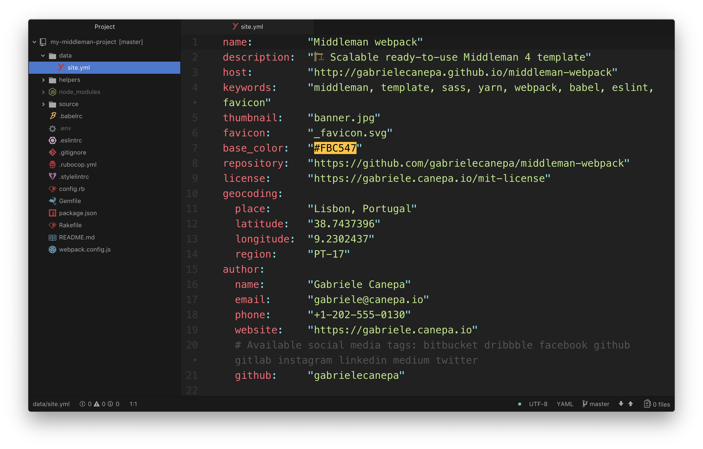
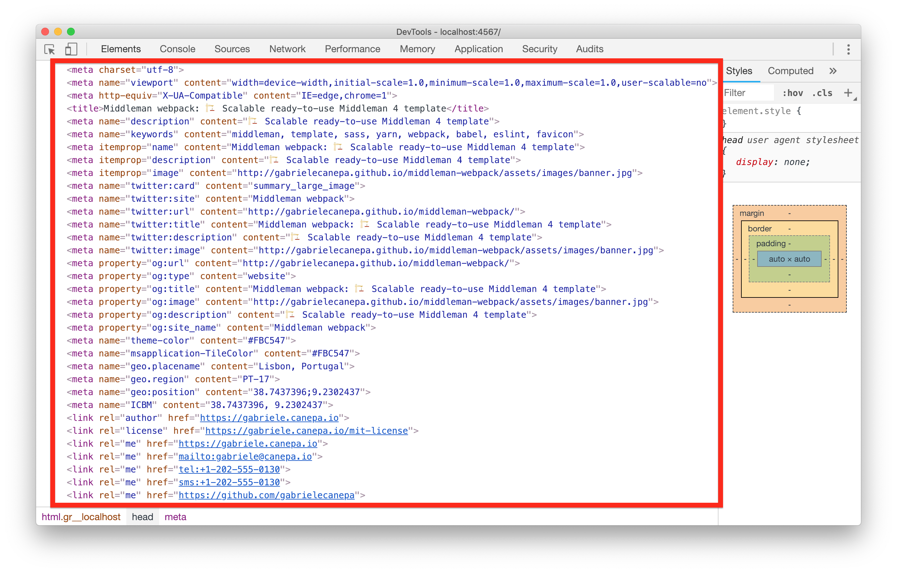
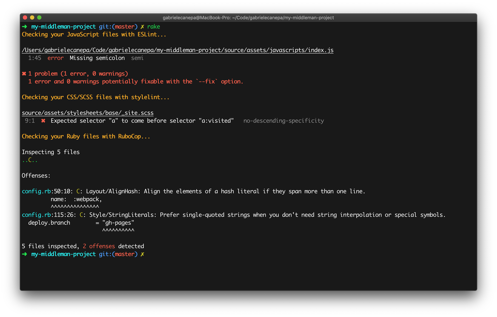
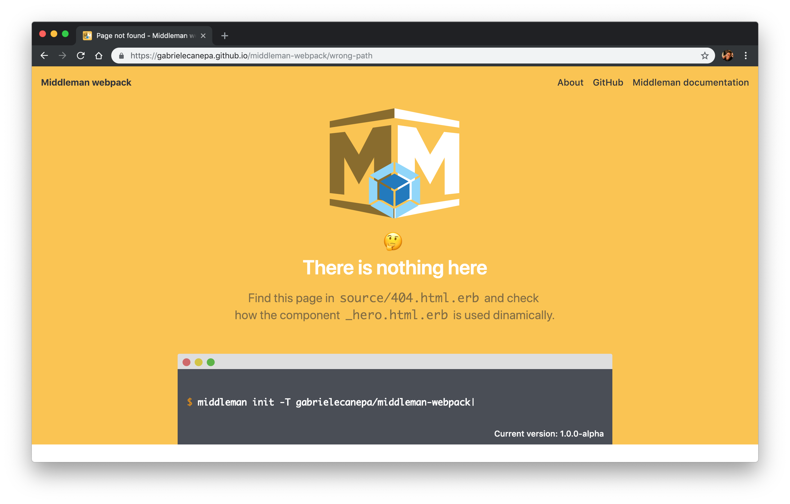

Middleman webpack
This is a template for Middleman 4.
It integrates some of the best modern tools and snippets to create advanced static websites.
It's mainly based on Yarn, a reliable and easy to use package manager, webpack, a module bundler capable of packaging almost any kind of asset, and Sass, one of the most powerful CSS extension language.
All this combined with the simplicity of Ruby and its gems, some reinvented powerful snippets, and the best available linters and debuggers.
What's included?
Core
Middleman extensions
Snippets
Linters
Debuggers
Dependencies
You must have the following tools installed to use this boilerplate:
Installation
Start a new project in your current directory
$ middleman init -T gabrielecanepa/middleman-webpack
or in a new one:
$ middleman init <project-name> -T gabrielecanepa/middleman-webpack
You can also set up an alias like middleman:webpack in one of your shell profiles
# ~/.bash_profile
alias middleman:webpack="middleman init $1 gabrielecanepa/middleman-webpack"
and use it to quickly initialize a new project.
Usage
💡 A good usage example, that will be used through this wiki, is the same documentation website of the template
$ middleman server # Run a local server
$ middleman build # Build the static files
$ middleman deploy # Deploy the built site
Getting started
You'll find the main settings of your website in data/site.yml.
The properties you set up here will be used by the auto_display_meta_tag helper to inject
specific tags in your views.
The default configuration

produces the following tags for the homepage:

Any tag can be overwritten (or created) in each page or layout with the set_meta_tag helper
(see source/index.html.erb)
<% set_meta_tags title: data.site.name + ": " + data.site.description,
full_title: false %>
or frontmatter (see
source/404.html.erb):
---
title: Page not found
description: This page was not found by Middleman webpack 🤔
keywords: page, not, found
---
💡 The full title option is set to true by default, and uses
-as separator. You can set this option to false to use an indipendant title, or change the symbol you want to use as separator (e.g.<% set_meta_tags separator: '∙')
Favicon
The icon you specify in the favicon field (_favicon.svg by default) must be
relative to source/assets/images.
The leading underscore prevents it from being copied into the build directory. The image format should be either PNG or SVG.
In production, it will be used to generate your favicons and show the correspondent tags in your layouts,
thanks to the auto_display_favicon_tags helper.
You can change the favicons you want to produce in your config.rb, and the tags generated by
the helper will change dynamically.
The favicons set by default
# config.rb
set :favicons, [
{
rel: 'apple-touch-icon',
size: '180x180',
icon: 'apple-touch-icon.png'
},
{
rel: 'icon',
type: 'image/png',
size: '32x32',
icon: 'favicon32x32.png'
},
{
rel: 'icon',
type: 'image/png',
size: '16x16',
icon: 'favicon16x16.png'
},
{
rel: 'shortcut icon',
size: '64x64,32x32,24x24,16x16',
icon: 'favicon.ico'
}
]
generate the following tags and relative icons:
<link rel="apple-touch-icon" sizes="180x180" href="apple-touch-icon.png">
<link rel="icon" type="image/png" sizes="32x32" href="favicon32x32.png">
<link rel="icon" type="image/png" sizes="16x16" href="favicon16x16.png">
<link rel="shortcut icon" sizes="64x64,32x32,24x24,16x16" href="favicon.ico">
Styling
Each application has different design needs, that's why the template doesn't include any CSS or built-in solution.
Your all.css.scss just shows an overview of a suggested architecture and imports the default
Middleman style:
// Suggested structure:
// 1. Settings
// ├── settings/
// 2. Vendors
// ├── vendors-stylesheets/
// ├── vendors-settings/
// 3. Style
// ├── 1. base/
// ├── 2. components/
// ├── 3. layouts/
// └── 4. pages/
@import "settings/colors";
@import "settings/fonts";
@import "base/site";
💡 An example of this structure can be found in the documentation website
It's important to follow a similar structure to ensure the proper rendering of your style and respect CSS specificity:
1. Settings
Your website setting must be imported first and contain the variables, mixins and rules you will use in your style. Check the Sass documentation for a better usage of this tools.
2. Vendors
Import external stylesheets right after your website settings, and before any eventual setting overriding the default library configuration.
Any stylesheet added with Yarn can be imported into your stylesheet files with an
@import statement followed by the path relative to the node_modules folder.
For instance, the documentation website has been bundled with
bootstrap, and to load the grid style from the
package the following line was added to all.css.scss:
@import "bootstrap/scss/bootstrap-grid";
💡 You can also import stylesheets in your JavaScript files. Check the Yarn and webpack section
3. Style
The last files to be imported must contain the actual style of your website:
- Base: general style, typography, base elements
- Components: buttons, cards, lists, etc.
- Layouts: navbar, footer, sidebar, etc.
- Pages: custom styling per page
Using Yarn and webpack
The repository comes configured with Yarn, webpack and the following loaders:
- Babel for JavaScript
- style-loader, css-loader, postcss-loader and sass-loader for CSS and SCSS
webpack has been integrated thanks to the in-built external pipeline extension (find its configuration in
config.rb), that allows Middleman to run multiple subprocesses.
Every time a server is run (in development or production), also the relative Yarn command gets executed
(yarn run start or yarn run build), which runs, in turn, the right webpack
process.
💡 Want to set up your application with a different JavaScript pipeline? Have a look at the relative Middleman documentation
Installing packages
You can install a new package with the following command:
yarn add <package-name> [--dev]
In your JavaScript files, import modules from a package with an import statement:
import tippy from "tippy.js";
tippy.setDefaults({
arrow: true,
arrowType: "round",
duration: [275, 200],
inertia: true
});
Importing stylesheets
You can also import CSS and SCSS in your scripts by following the path relative to the
node_modules folder.
For example, to import the default grid style from Bootstrap:
import "bootstrap/scss/_bootstrap-grid.scss";
💡 If you want to extract CSS/SCSS into separate files check the mini-css-extractor-plugin
Advanced configuration
webpack it is capable of transforming, bundling, or packaging just about any resource or asset, but can be tricky to configure.
If you want to understand and master a wide variety of tools and features that this tool offers, have a look at the official webpack guides.
Images
You can embed inline SVG icons in your views thanks to the svg_tag helper:
svg_tag(file_name, attributes = {})
The file_name has to be relative to your images folder. HTML attributes (id,
class, title, etc.) can be specified directly in the helper.
The biggest advantage of using inline SVGs is being able to have complete control over the different shapes using CSS and JavaScript (check the footer of the documentation website 😎).
You can find an example of embedding an SVG document and applying a class attribute in your
source/index.html.erb:
<%= svg_tag "logo.svg", class: "middleman-logo" %>
Building and deploying
Finally, when you are ready to deliver static code, you will need to build the site. Using the command-line, from the project folder, run the correspondent Middleman command:
$ middleman build
This will create a static file for each file located in your source folder, compile your webpack bundles, and generate the specified favicons.
Any enabled build-time features (such as minification and compression) will be executed. You can find the
extensions activated by default in the build-specific section of your config.rb.
After building the site you will have everything you need within the build directory.
A very handy tool to deploy a build is
middleman-deploy. By default, it has been
configured to deploy your website on GitHub Pages via the
gh-pages branch, and build the static files before any new deployment.
To activate the extension, simply run from your command-line:
$ middleman deploy
Extra
Testing and linters
You can test your code thanks to the Rake gem, allowing to write tests and tasks in standard Ruby syntax.
By default, 3 tasks have been defined, each one testing the style for a specific language (JavaScript,
SCSS and Ruby). Run them with the rake command:

If you use Atom as text editor, you can install linter-eslint, linter-rubocop and linter-stylelint to check your style while you write code. If you use Sublime Text, have a look at the ESLint, RuboCop and stylelint packages.
404 page
A simple 404 page has already been provided. Use it to display a custom page when visitors attempt to access paths that don’t exist:

Contributing
- Fork the repository
- Create your feature branch (
git checkout -b my-new-feature) - Commit your changes (
git commit -m "Add some feature") - Push to the branch (
git push origin my-new-feature) - Create a new pull request